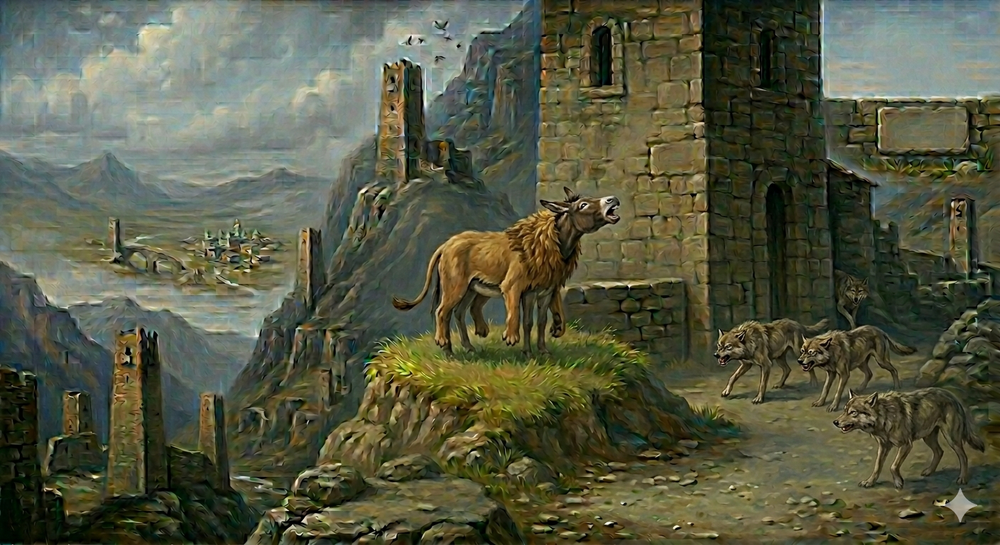

И.А. Дахкильгов. Хьехаме дувцарш - поучительные рассказы-притчи.
И.А. Дахкильгов. Хьехаме дувцарш - поучительные рассказы-притчи. Из ингушского фольклора.

Лом хила гӀийрта вир
Цхьанахьа денна уллача лома цӀока тӀера хьа а яьккха, шийна тӀа а кхелла, оакхарой кхерадеш лелаш хиннад вир. Цкъа диц а денна, вирах Ӏаьхад из. Ӏаьхача хана берташта юкъе нийсаденна хиннад вир. Массадолча оакхарошта дӀахайнад из ше мадарра вир долга. Циггач берташа дийна дӀадаьккхад.
РУССКИЙ
Осел, захотевший стать львом
Где-то осел наткнулся на мертвого льва, содрал его шкуру, накинул ее на себя и стал стращать других зверей. Возгордился осел настолько, что забылся и как-то заорал по-своему, по-ослиному. А в это время он находился среди волков. Все звери узнали осла. Тут волки накинулись и разодрали его.
ENGLISH
The Donkey Who Wanted to Be a Lion
One day, a donkey came across a dead lion. He stripped off its skin, threw it over himself and began to frighten the other animals. He grew so proud that he lost all sense of himself and let out a bray — a donkey's bray. At that very moment, he was surrounded by wolves. All the animals recognised him as a donkey. The wolves pounced and tore him to pieces.
НОХЧИЙН
Лом хила гӀиртина вир
Цхьанхьа делла Ӏуьллучу лоьман цӀока тӀера схьа а йаьккхина, шена тӀе а кхоьллина, акхарой кхерош лелаш хилла вир. Цкъа диц а делла, вирах Ӏаьхна иза. Ӏаьхначу хенахь берзалошна йукъе нисйелла хилла вир. Массо акхарошна дӀахиъна иза ша ма-йарра вир йуьйла. Циггахь берзалоша йийна дӀайаьккхина.
ПОГОВОРКИ
Ала йоӀага - хаза несийна. - Скажи (что-то сделать) дочери, но чтобы услышала сноха. Даьттеи хийи мелла цхьана кхехкадарах вӀашагӀийнадац. - Сколько бы в одном котле ни варили воду и масло, они никогда не смешиваются. Зе меттаотт, хинна баьнна эхь-бехк оттац. - Убыток (материальный) можно возместить, утерянную же честь (совесть) никогда не возродить. "Хьо-м везацар сона, хьа кисилг (кепилг) дезар", - яхад цхьанне. - "Да не тебя я люблю, а твой кармашек (твою денежку)", - шутя говорил некто. Дезал дика - беркат дукха. - Хороша семья - много благодати в доме. Ет бахкалца Ӏе а Ӏийна, пкъи ца юаш вахар санна. - Как тот, кто дождался отела и ушел, не попив молозива. Йийначо йиай пхьагал. - Зайца ест тот, кто его убьет. Йохкаенна гӀишло тоае хьашт дац. - Нет проку ремонтировать прогнившее строение. Керда коч ийца йоӀ хи тӀа кадайгӀа ух. - Когда девушке купили новое платье, она стала чаще ходить по воду. Комаца дов даьккха а хьай денал гойта. - Покажи свое мужество, хотя бы пободавшись с бараном. Кхалсага бахьан хьахинна дов ийс маӀача сагага кхаьчад. - Из-за одной женщины вражда постигает девятерых мужчин. Кхоанара ди ца лехачун таханара ди дац. - Кто не думает о завтрашнем дне, у того не будет дня сегодняшнего. Къайг тӀаеча, кӀала яьгӀар гӀот. - Даже ворона привстает, когда другая подлетает. Къоала тӀехваьнна лелачун коа йоархӀаш яьннай. - Двор вора бурьяном зарастает. Машар лийхар - вахав, дов-шов лийхар - веннав. - Искавший мира - жил, искавший ссоры и войны - погиб. Мух еначун дакъа диачун че лезаяц. - Живот не заболит у того, кто съест долю закапризничавшего за едою. Наьха даьттах тийша худар де ма отта. - Не начинай варить кашу в расчете на чужое масло. Наьха сий доаде венначун ший сий дов. - Сам чести лишается тот, кто стремится обесчестить других. Нокхарамозо а юв тох, ший мезага кхайдача. - И пчела жалит, когда посягнут на ее мед. "Сайна дикадар даь саг вийна воагӀа со", - яхаш доккхал деш хиннав бӀеха саг. - "Я иду, убив сделавшего мне доброе дело", - хвастался человек черной души. Тийшаболх лелабаьча коа нитташ баьннаб. - Двор подлых (предательских) людей зарастет крапивой. Хаьхочо къу зув, къуно хаьхо лараву. - Сторож высматривает вора, вор следит за сторожем. Шурийга хьежжа хул даьтта. - Каково молоко, таково и масло. Эшаш вале, лохаш хила. - Нуждаешься в чем-то - ищи это.